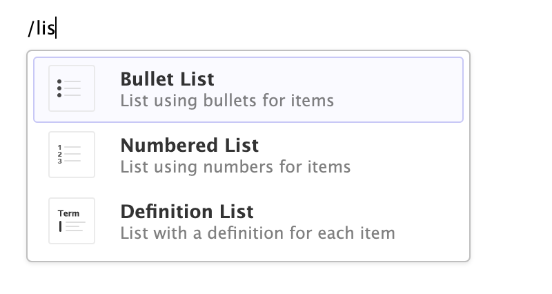
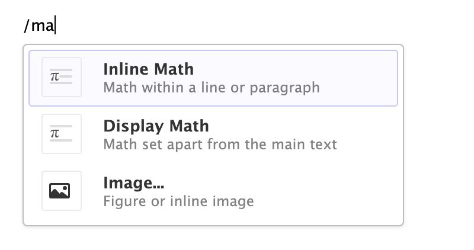
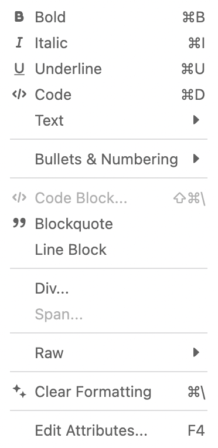
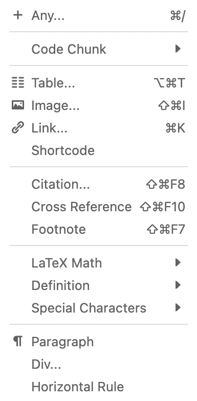
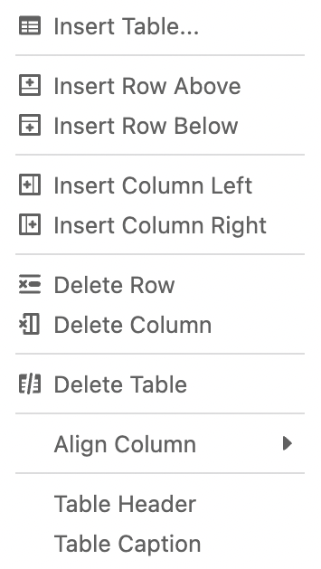

Visual Editing in VS Code
Overview
The Quarto VS Code Extension includes a visual markdown editor that supports all of Quarto’s markdown syntax including tables, citations, cross-references, footnotes, divs/spans, definition lists, attributes, raw HTML/TeX, and more:

You can switch between visual and source mode at any time and can even edit documents concurrently in both modes. To switch between visual and source mode:
Use the ⇧⌘ F4 keyboard shortcut.
Use the context menu from anywhere in a document:

Use the Edit in Visual Mode and Edit in Source Mode commands:

Use the editor menu:

You can also right click a .qmd document in the file explorer and select the Open With… command, which will prompt you for the editor to open the file with:

Note that this menu also provides an option to configure the default editor for .qmd files: use this if you want to primarily edit in visual mode and occasionally switch to source mode.
Keyboard Shortcuts
Visual mode supports both traditional keyboard shortcuts (e.g. ⌘ B for bold) as well as markdown shortcuts (using markdown syntax directly). For example, enclose **bold** text in asterisks or type ## and press space to create a second level heading.
Here are the available keyboard and markdown shortcuts:
| Command | Keyboard Shortcut | Markdown Shortcut |
|---|---|---|
| Bold | ⌘ B | **bold** |
| Italic | ⌘ I | *italic* |
| Code | ⌘ D | `code` |
| Strikeout | ~~strike~~ |
|
| Subscript | ~sub~ |
|
| Superscript | ^super^ |
|
| Heading 1 | ⌥⌘ 1 | # |
| Heading 2 | ⌥⌘ 2 | ## |
| Heading 3 | ⌥⌘ 3 | ### |
| Heading Attributes | {#id .class} |
|
| Link | ⌘ K | <href> |
| Blockquote | > |
|
| Code Block | ⇧⌘ \ | ``` |
| Code Cell | ⌥⌘ I | ```{python} |
| Raw Block | ```{=html} |
|
| Div | ::: |
|
| Bullet List | - |
|
| Ordered List | 1. |
|
| Tight List | ⌥⌘ 9 | |
| List Check | [x] |
|
| Emoji | :smile: |
|
| Definition | : |
|
| Non-Breaking Space | ⌃ Space | |
| Hard Line Break | ⇧ Enter | |
| Paragraph | ⌥⌘ 0 | |
| Image | ⇧⌘ I | |
| Footnote | ⇧⌘ F7 | |
| Citation | ⇧⌘ F8 | [@ |
| Table | ⌥⌘ T | |
| Editing Comment | ⇧⌘ C | |
| Select All | ⌘ A | |
| Clear Formatting | ⌘ \ | |
| Edit Attributes | F4 |
For markdown shortcuts, if you didn’t intend to use a shortcut and want to reverse its effect, just press the backspace key.
Insert Anything
You can also use the catch-all ⌘ / shortcut to insert just about anything. Just execute the shortcut then type what you want to insert. For example:


If you are at the beginning of a line (as displayed above), you can also enter plain / to invoke the shortcut.
Editor Toolbar
The editor toolbar includes buttons for the most commonly used formatting commands:

Additional commands are available on the Format, Insert, and Table menus:
| Format | Insert | Table |
|---|---|---|
|  |  |  |
Editor Options
There are a variety of VS Code options available to configure the behavior of the visual editor. You can locate these options by filtering on quarto.visualEditor in the settings pane:

Options enable configuration of appearance (font size, content width, etc.), markdown output (e.g. column wrapping), spell checking, and default spacing for lists.
Zotero Citations
Zotero is a popular free and open source reference manager. The Quarto visual editor integrates directly with Zotero, enabling you to use the Insert Citation command to use references from your Zotero libraries:

Zotero references will also show up automatically in visual editor completions:

Items from Zotero will appear alongside items from your bibliography with a small “Z” logo juxtaposed over them. If you insert a citation from Zotero that isn’t already in your bibliography then it will be automatically added to the bibliography.
If you are running both VS Code and Zotero on your desktop, then no additional configuration is required for connecting to your Zotero library. If however you using VS Code in a web browser and/or want to access your Zotero library over the web, then a few more steps are required (see the Zotero Web API section for details).
Group Libraries
Zotero Groups provide a powerful way to share collections with a class or work closely with colleagues on a project. By default, Zotero Group Libraries are not included in the Insert Citation dialog or citation completions. However, you can use the Quarto > Zotero: Group Libraries option to activate one or more group libraries (either globally, or per-workspace):

After you’ve added a group library to the list, a sync will be performed and you should see the library in the Insert Citation dialog. If you don’t, double check the exact spelling of the group library name you are configuring (you may even want to copy and paste it from Zotero so you are certain to get it right).
Zotero Web API
If you are using VS Code in a web browser and/or don’t have Zotero installed locally, you can still access your Zotero library using the Zotero Web API (assuming you have a Zotero web account and have synced your libraries to your account).
If you are running VS Code on your desktop it’s generally easier to also run Zotero on your desktop and access your library locally. That said, it is possible to access Zotero web libraries from VS Code on the desktop if you prefer that configuration.
API Access Key
Zotero integration uses the Zotero Web API, so the first step is to create a Zotero account and then configure Zotero to sync its data to your account. You can do this using the Sync tab of the Zotero preferences:

Once you’ve configured your library to sync, you need to create a Zotero API Key:

Follow the instructions to create a new access key. Note that if you want to use Group Libraries, you should change the default to provide read-only access to groups (as illustrated above).
Be sure to record your key after generating it (i.e. copy it to the clipboard and/or save it somewhere more permanent) as you won’t be able to view it again after you navigate away.
Library Configuration
Finally, go to Zotero settings and specify that you’d like to use your web Zotero library rather than a local one:

You’ll then be promoted to enter your Zotero Web API Key:

After you provide your API key and it is validated, an initial sync of your Zotero libraries is performed. After this, you are ready to start inserting citations from Zotero.
If you need to change your Zotero API key, you can always execute the Quarto: Zotero - Connect Web Library command. To force a sync of your web library, execute the Quarto: Zotero - Sync Web Library command (note that your web library is synced automatically so it is unlikely you’ll need to use this command explicitly).
Markdown Output
The Quarto visual editor generates markdown using Pandoc. This means that in some cases your markdown will be rewritten to conform to standard Pandoc idioms. For example, Pandoc inserts 3 spaces after list bullets and automatically escapes characters that might be used for markdown syntax.
Here is a list of conventions for Pandoc generated markdown that might differ from your own markdown writing style:
*text*is used in preference to_text_- Backtick code blocks are written as
``` {.md}rather than```md - Backtick code blocks with no attributes are rendered as 4-space indented code blocks
- Horizontal rules are written as dashes spanning the full width of the document
- Plain links are written as
<https://yihui.org>rather thanhttps://yihui.org - Bullet and numbered lists use additional leading spaces before list item content
- The blockquote character (
>) is included on each new line of a blockquote - Table captions are written below rather than above tables
- Multiline HTML and TeX blocks use the explicit raw attribute (e.g.
```{=tex}) - Inline footnotes are replaced with footnotes immediately below the paragraph
- Nested divs use
:::at all levels so long as their attributes are distinct - Unnumbered sections are designated with
{.unnumbered}rather than{-} - Characters used for markdown syntax (e.g.
*,_, or#) are always escaped
While some of this behavior might be bothersome at first, if you decide that visual editing mode is useful for your workflow it’s probably best to just adapt to writing your own markdown the same way that Pandoc does.
Writer Options
Some aspects of markdown output can be customized via global, project, or file-level options, including:
- How to wrap / break lines (fixed column, sentence-per-line, etc.).
- Where to write footnotes (below the current paragraph or section, or at the end of the document).
- Wheter to write inline or reference style links.
You can specify these options in one of two ways:
As a global or per-workspace VS Code option (you can find the options that affect markdown output by filtering on
quarto.visualEditor.markdown).Specifying them within document or project level YAML (described below).
Line Wrapping
By default, the visual editor writes Markdown with no line wrapping (paragraphs all occupy a single line). However, if you prefer to insert line breaks at a particular column (e.g. 72 or 80), or to insert a line break after each sentence, you can use the quarto.visualEditor.markdownWrap and quarto.visualEditor.markdownWrapColumn options accessible from the settings editor in VS Code.
You can also set this behavior on a per-document or per-project basis via the wrap option. For example, to wrap lines after 72 characters you would use this:
---
editor:
markdown:
wrap: 72
---To insert a line break after each sentence, use wrap: sentence. For example:
---
editor:
markdown:
wrap: sentence
---The algorithm used for sentence wrapping will handle English and Japanese text well, but may not detect the end of sentences accurately for other languages.
If you have enabled a global line wrapping option and want to turn off wrapping for a given document, use wrap: none.
References
By default, references (footnotes and reference links) are written at the end of the block where their corresponding footnote appears. You can override this behavior using the quarto.visualEditor.markdownReferences VS Code setting or by using the references option within document or project YAML.
For example, to write references at the end of sections rather than blocks you would use:
---
title: "My Document"
editor:
markdown:
references:
location: block
---Valid values for the references option are block, section, and document.
If you are aggregating a set of markdown documents into a larger work, you may want to make sure that reference identifiers are unique across all of your documents (e.g. you don’t want to have [^1] appear multiple times). You can ensure uniqueness via the prefix option. For example:
---
title: "My Document"
editor:
markdown:
references:
location: block
prefix: "mydoc"
---This will result in footnotes in this document using the specified prefix (e.g. [^mydoc-1]), ensuring they are globally unique across the manuscript.
Note that if you are within a Quarto book project then a references prefix is applied automatically so no changes to editor options are required.
Links
Links are written inline by default, however they can be written as reference links (below content as with footnotes) by adding the links: true option to the references section of document or project YAML. For example:
---
title: "My Document"
editor:
markdown:
references:
location: block
links: true
---You can alternatively enable reference links using the VS Code quarto.visualEditor.markdownReferenceLinks option.
Known Limitations
There are a handful of Pandoc markdown extensions not currently supported by visual editing. These are infrequently used extensions, so in all likelihood they won’t affect documents you edit, but are still worth noting.
| Extension(s) | Example | Behavior |
|---|---|---|
| Inline footnotes | ^[inline] | Converted to numeric footnote. |
| Footnote identifiers | [^longnote] | Converted to numeric footnote. |
| Example lists | (@) First example | Read/written as ordinary numbered lists. |
| Auto-list numbers | #. First item | Read/written as ordinary numbered lists. |
| Reference links | This is a [link] | Converted to ordinary links. |
| MultiMarkdown attributes | # Heading [id] | Converted to Pandoc attributes. |
The visual editor is unable to parse non-YAML title blocks (e.g. old-style % titles or MultiMarkdown titles) and also unable to parse non top-level YAML metadata blocks. If these forms of metadata are encountered, visual mode will fail to load with a warning.
Note that support for reference links can be enabled via the editor: markdown: references: links option in document or project YAML, or the VS Code quarto.visualEditor.markdownReferenceLinks option. Reference links will be written according the reference location option (either the block or section in which they appear, or alternatively at the end of the document).